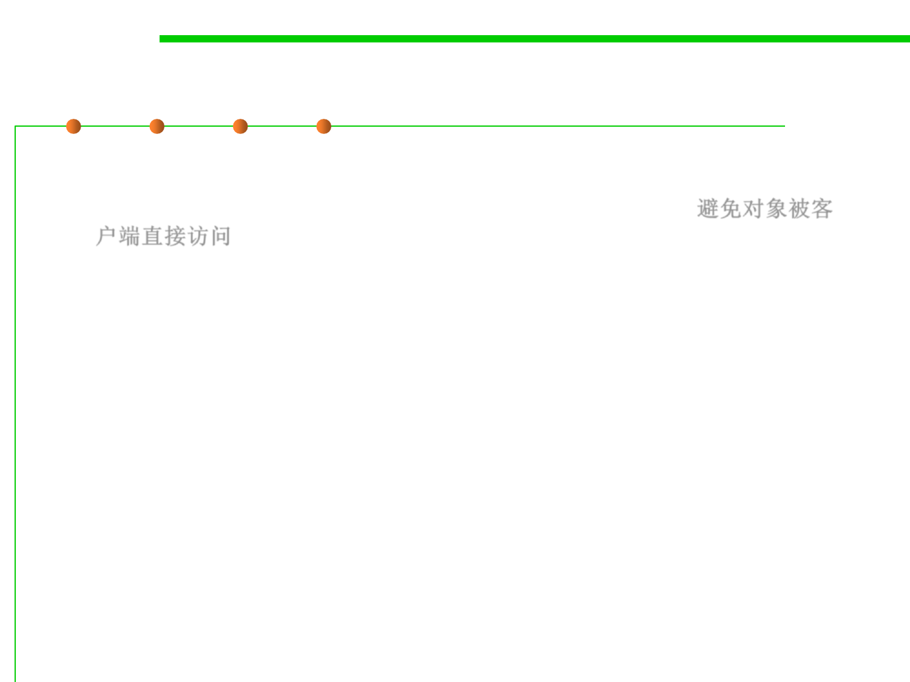

Proxy Pattern Motivation
6.2 Design Patterns for Maintainability
▪ Goal:
– Prevent an object from being accessed directly by its clients 避免对象被客
户端直接访问
▪ Solution:
– Use an additional object, called a proxy
– Clients access to protected object only through proxy
– Proxy keeps track of status and/or location of protected object